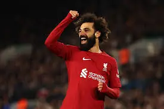

The Egyptian king who inspired the whole world about How Hard Work can get you to what you want
Date of birth 15 June 1992 (age 32)
Place of birth Nagrig, Basyoun, Egypt
He is an Egyptian professional footballer who plays as a right winger or forward for Premier League club Liverpool and captains the Egypt national team. Regarded as one of the best players of his generation and among the greatest African players of all time, he is known for his clinical finishing, dribbling and speed
Achievements:
Mohamed Salah, the Egyptian professional footballer, has achieved numerous accolades and milestones throughout his career. Here are some of his notable achievements:
- Premier League Golden Boot: Salah has won the Premier League Golden Boot twice, in the 2017-2018 and 2018-2019 seasons, scoring 32 and 22 goals respectively.
- UEFA Champions League: He was a key player in Liverpool's 2018-2019 UEFA Champions League-winning campaign, contributing crucial goals throughout the tournament.
- African Player of the Year: Salah has been named the CAF African Footballer of the Year multiple times, winning in 2017, 2018, and 2019.
- BBC African Footballer of the Year: Salah has won the BBC African Footballer of the Year award multiple times, in 2017 and 2018.
- FIFA Club World Cup: Salah won the FIFA Club World Cup with Liverpool in 2019.
- & more & more trophies